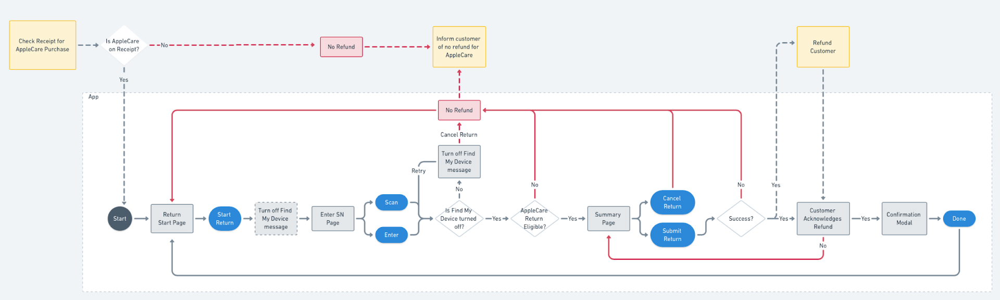

Costco AppleCare
This project was done in collaboration with Costco and Apple. We helped design a kiosk interface to help Costco associates enroll members into AppleCare with their Apple devices.
*Visuals in this page are altered due to project NDA.

Role:
Usability Testing, Design QA, User Experience, User Interface
Tools:
Sketch, Invision, Zeplin, Principle
I joined this project with the responsibility of planning and testing out the interaction of the screens. I worked on the flow of the application and communicated this with the developrs using Invision and Principle to create animations and videos. I was also apart of the usability testing phase, where myself and another team member got to run through the application with the clients to see if any changes were needed and gained helpful insights. I was responsible for Design QA and to test out any errors before submitting it to the developers in Jira.
Overview
In 2018, Costco started selling Apple devices, but was not able to sell AppleCare with them at the time. This meant that if customers who bought Apple devices wanted to purchase AppleCare, they had to physically take the device to an Apple store and have an employee run diagnostics on their device before they can purchase AppleCare. Without selling AppleCare, Costco couldn’t bring the full experience of purchasing and owning an Apple product that Apple currently offers.
User Flow
After we had initial conversations with Costco and Apple, we came up with an app map to depict the flow of the app and capture the interactions between the app and the warehouse associates and members.
User Testing: Enrollment Flow
We did user testing with Costco employees who would be interacting with the app. This was done at Costco’s office where we had the users go through the flow of scanning in Apple products, removing the Apple products that got scanned, scanning in the receipt information, and inputting their email for the transaction record.
Insights
From user testing, we found that even though we followed the iOS patterns closely, users got confused with iOS specific details. For example, when you have a dialog to type something in, there is a “done” button on the top-right corner that simply closes the dialog without completing any action. Because users were confused by this, which appears in native Apple apps, we changed the label from “done” to “close”.
Return Flow
We also took into consideration the flow for when the user wants to return AppleCare. We created a set of return error scenarios and captured it into our designs.
Result
This app has been deployed and we launched a pilot at 2 new warehouses in Florida right on opening day. We then rolled out to the rest of the U.S. with over 500 warehouses.